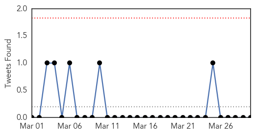
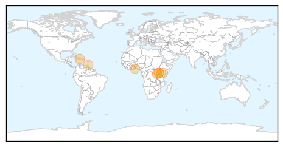
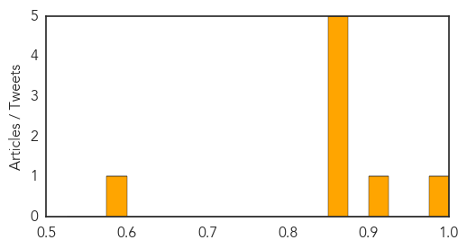
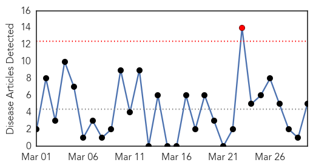
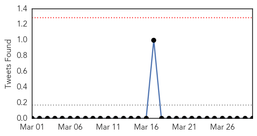
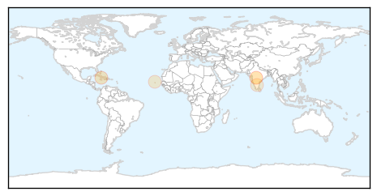
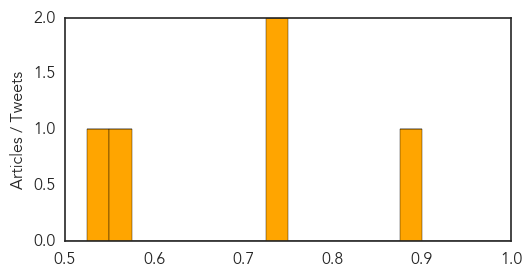

Cholera
30-Day Web Trend
0 alerts, 0 warnings

30-Day Twitter Trend
0 alerts, 0 warnings

Article Locations
Article Confidences
Top Articles:
- 0.993
- Cholera vaccination campaign shows success in Haiti
- 0.902
- Nursing by phone helps save lives in Ghana’s coastal town
- 0.863
- Ugandan Nurses Reject Export of Doctors
- 0.863
- PROBE: Kenya Airports Authority Boss Steps Aside
- 0.863
- Museveni Witnesses New Railway Deal Signing in China
- 0.863
- Museveni Travels 122 kms by Train in China
- 0.863
- Lubaga Hospital Dragged to Court Over Negligence
- 0.599
- Water springs contaminated
Top Tweets:
-
No tweets found for Mar 30, 2015
Dengue Fever
30-Day Web Trend
1 alerts, 0 warnings

30-Day Twitter Trend
0 alerts, 0 warnings

Article Locations
Article Confidences
Top Articles:
- 0.898
- IMA plans new surveillance system to warn doctors about new outbreaks
- 0.741
- Selangor still tops dengue cases in the country
- 0.735
- Cuba’s Public Health Policy: Past Present & Future
- 0.572
- News of Neglected Tropical Diseases
- 0.545
- BANGALORE Medical Center, Management, Equipments, Administration, Dr. Meenakshi (Child specailist at CMH-Bangalore)
Top Tweets:
- 0.808
- Flavivirus news: MP: Class 10 student develops app to help swine flu, dengue patients - Hindust... http://t.co/7qXyjyRIOm pathogenposse